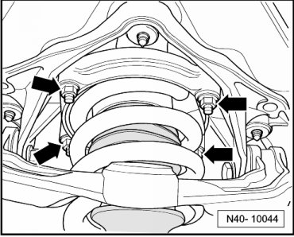
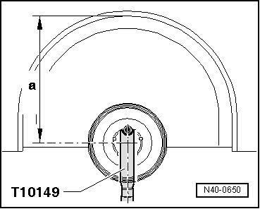
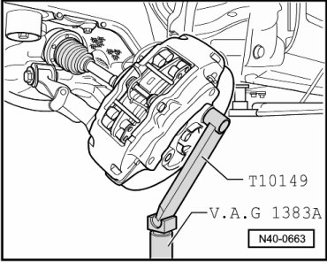
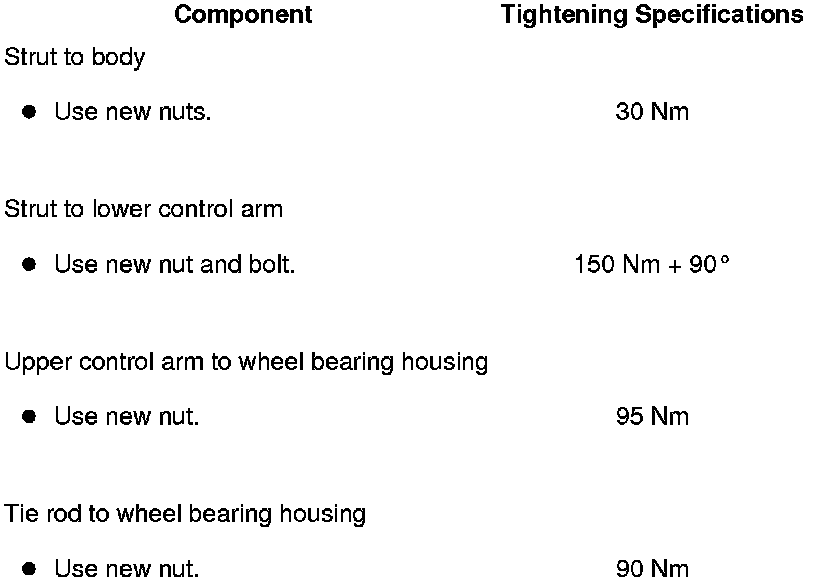

Strut
Strut
Special tools, testers and auxiliary items required
• Torque wrench (VAG 1332)
• Engine and transmission jack (VAG 1383 A)
• Socket, nominal size 12 mm (T10099)
• Socket, nominal size 14 mm (T10099/1)
• Mount (T10149)
• Ball joint puller (T10187)
Removing
CAUTION!
Before starting work, stabilizer bars must be coupled in vehicles with separable stabilizer bars. Otherwise, there is the danger of injury caused by unintentional separation.
- Remove wheel.
- Remove coupling rod from stabilizer bar.
- Disconnect driveshaft from rear final drive. Use socket, nominal size 12 mm (T10099) or socket, nominal size 14 mm (T10099/1) to loosen bolts.
- Remove strut from body - arrows -.

- Turn wheel hub far enough until one of the holes for wheel bolts is on top.
- Install wheel hub support (T10149) with wheel bolt.

- Press off tie rod from wheel bearing housing.

- Press out upper control arm.

- Remove bolt connecting strut to lower control arm.
- Do not lower wheel bearing housing more than necessary.

- Remove bolt from lower control arm and remove strut.
Installing
Installation is the reverse of removal, with special attention to the following:
- Install wheel and tire. Refer to --> [ Wheel Bolts, Tightening Specification ] .
- After installation, a vehicle alignment must be performed. Refer to --> [ Wheel Alignment ] Wheel Alignment.
Tightening Specifications
